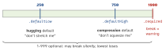
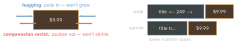
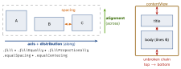

ios-swift · folio
In one line: Every constraint is one linear equation
item1.attr {=,≤,≥} multiplier ×
item2.attr + constant — the engine solves them all so each
view gets exactly x, y, width, height. Too few = ambiguous; contradictory
required ones = unsatisfiable. Priorities decide who
yields: 1000 / 750 / 250.
Download PDF Print view LaTeX source

How it works
translatesAutoresizingMaskIntoConstraints = false
on every code-created view — else UIKit turns the autoresizing mask into constraints that fight yours (wrong place / zero size / conflict log). IB sets it for you. ThenNSLayoutConstraint.activate([…]).- Anchors:
leading/trailing(flip for RTL — prefer them overleft/right),top/bottom,centerX/Y,width/height,firstBaseline. Trailing/bottom constants are negative (-16). - Intrinsic content size:
UILabel,UIButton,UIImageView,UISwitchknow their natural size, so position constraints alone suffice. PlainUIViewhas none. Custom: overrideintrinsicContentSize, callinvalidateIntrinsicContentSize()when it changes. - Hugging (default 250) = resist growing beyond intrinsic size. Compression resistance (default 750) = resist shrinking below it. Per axis. Lower value loses: stretches first / truncates first.
UILayoutPriority:.required= 1000,.defaultHigh= 750,.defaultLow= 250,.fittingSizeLevel= 50. <1000 = optional: broken silently, lowest first. Tie at 750 vs 750 → arbitrary; nudge one to 749 / 251 to make it deterministic.- Unsatisfiable (“Unable to simultaneously satisfy constraints”) = ≥2 required constraints contradict (
leading 0 + width 300 + trailing 0in 320 pt). The engine breaks one — “Will attempt to recover by breaking…” — which one is arbitrary. Fix: drop one below 1000. Debug: symbolic breakpointUIViewAlertForUnsatisfiableConstraints, the View Debugger,hasAmbiguousLayout. - Safe area: pin content to
view.safeAreaLayoutGuide. Superview edges put text under the notch / Dynamic Island and buttons under the home indicator (the system gesture eats the tap). Full-bleed backgrounds may go to the real edges. - Size classes: two axes (horizontal, vertical) × two values (
.compact,.regular). iPhone portrait = wC hR; iPhone landscape = wC hC (Max/Plus: wR hC); iPad full screen = wR hR; iPad narrow split = wC. ReadtraitCollection.horizontalSizeClass; react on trait change (swap constraints / stackaxis). - Animate a constraint: change
.constant, thenUIView.animate { superview.layoutIfNeeded() }.
Example — a title + price row
let row = UIStackView(arrangedSubviews: [title, price])
row.axis = .horizontal; row.spacing = 8 // direction, gap
row.distribution = .fill // sizing ALONG the axis
row.alignment = .firstBaseline // position ACROSS the axis
row.translatesAutoresizingMaskIntoConstraints = false // #1 bug
view.addSubview(row)
let m = view.layoutMarginsGuide // inset, inside the safe area
NSLayoutConstraint.activate([ // height: intrinsic size
row.topAnchor.constraint(equalTo: m.topAnchor),
row.leadingAnchor.constraint(equalTo: m.leadingAnchor),
row.trailingAnchor.constraint(equalTo: m.trailingAnchor)])
title.setContentHuggingPriority(.defaultLow - 1, for: .horizontal)
title.setContentCompressionResistancePriority(.defaultHigh - 1,
for: .horizontal)Result: title (249 / 749) stretches to fill
and truncates first; price (250 / 750) stays compact and
readable. .fill picks the stretcher by lowest hugging.
The priority scale

Hugging vs compression

Stack view · self-sizing cell

Cell: tableView.rowHeight =
UITableView.automaticDimension + tableView.estimatedRowHeight = 80
(non-zero) + the chain; no heightForRowAt. Stack: add with
addArrangedSubview (not addSubview); isHidden
collapses a child.
Traps
- Two views both at 750 / 250: who yields is arbitrary — set one to 749 / 251; a strict loser beats a random tie.
- Interface Builder gives labels hugging 251(unverified), code gets 250: the same layout behaves differently built in code.
- Distribution = along the axis, alignment = across — swapped, the stack “ignores” the setting.
- Self-sizing cells are not the delegate:
automaticDimension+estimatedRowHeight+ an unbroken chain. - Hugging is about growing past content, not about “edges”.
- Wrong place / zero size in code → first suspect
translates…. - Size classes = compact/regular per axis, not device sizes.
The three passes, top-down each frame
| pass (override) | mark dirty | force now |
|---|---|---|
updateConstraints | setNeedsUpdate… | updateConstraintsIfNeeded |
layoutSubviews | setNeedsLayout | layoutIfNeeded |
draw(_:) | setNeedsDisplay | — (next frame) |
Remember
“A thousand is law, 750 guards the content, 250 lets it grow.” Stack: A-D-A-S — Axis, Distribution, Alignment, Spacing. Cell: auto + estimate + chain.